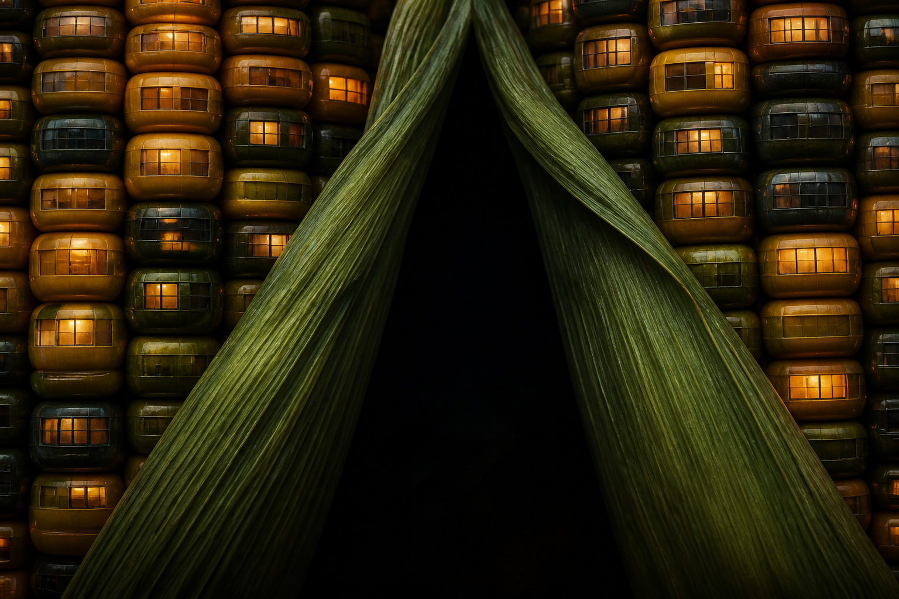

Świat
Kernel Facade — kolba jako budynek, nie jako plon na stocku.

KUKURYDZA
Każde ziarno to komórka fasady. Scroll zapala rzędy jak okna o zmierzchu.
Wejdź w kolbęTypowa strona o kukurydzy pokazuje pole o zachodzie. Ta nie. Kolba stoi frontalnie, jak elewacja: moduł, rytm, światło w komórkach. To samo ziarno, które jesz, jest tu jednostką architektury.
Liczby poglądowe, na potrzeby demonstracji designu — nie raport agronomiczny.
Poniżej: żywa fasada. Im głębiej schodzisz, tym więcej komórek dostaje emaliowany blask — jakby ktoś włączał światła piętro po piętrze.
Emalia ziarna. Matowa łuska. Ciepły bloom w komórce. Materiał strony bierze się z kolby, nie z „agri gradientu”.
Strona istnieje, żeby pokazać, co robi Impeccable w Cursorze: jeden świat wizualny, kompozycja do bólu, zero agri-szablonu. Tematem jest kukurydza. Dowodem jest to, jak ją widzisz.
Kernel Facade — kolba jako budynek, nie jako plon na stocku.
Pełna ściana ziaren, łuska rozchylona, marka w czarnej dziurze.
Scroll jako włącznik świateł w fasadzie — jedna intencja, nie confetti.